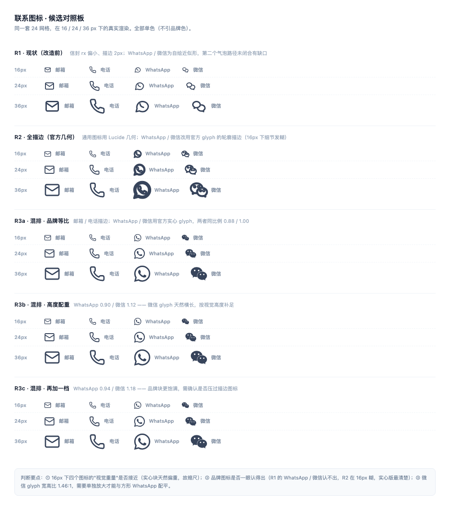
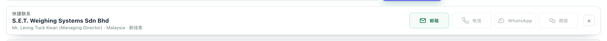
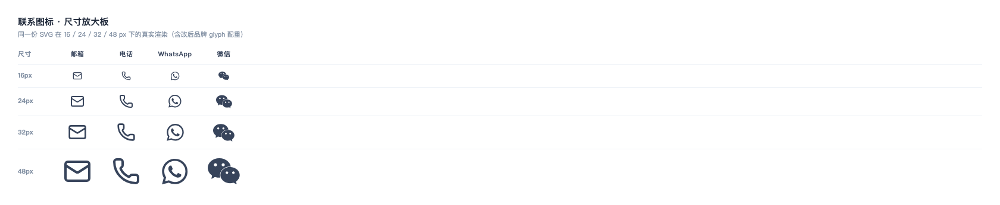
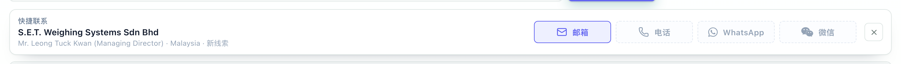
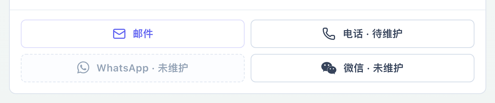
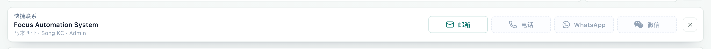
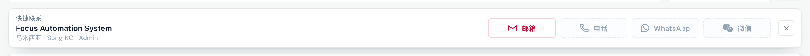
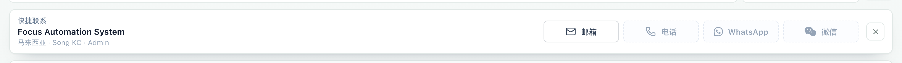

列表页「联系图标条」体检与改造
客户 / 线索 / 客户公池三个列表页，点行后出现的快捷联系条（邮箱 · 电话 · WhatsApp · 微信）。
结论：4 个图标里有 2 个是自绘近似形，16px 下认不出；按钮用 10px/800 字重，正好撞上已定的排版禁区。已全部重画并规范化。
1问题诊断
不是"再调调粗细"的问题，是三处结构性缺陷叠在一起，所以整体显得土。
- WhatsApp / 微信是手绘近似形，不是官方标识。原来 WhatsApp 画的是一个不规则气泡加内部一段弧线；微信画的是两个泡泡，其中第二个气泡的路径根本没有闭合（
M15.5 10c3 0 5.5 2 5.5 4.5…没有Z，也没有回到起点），放大后能看到明显断口。品牌标识的形状用户有强记忆，画得"差不多"＝一眼看出画错了。 - 四个图标的视觉重量不齐。邮箱的信封框只有 18×14（在 24 网格里），微信两个泡泡叠在一起显得又小又碎，WhatsApp 气泡又偏大 —— 放在一排里像三个不同来源的图标拼的。
- 按钮排版撞了已定的规范。
font-size:10px+font-weight:800，而界面规范里早已把 800/900 字重和 10px 列为禁用档；圆角 7px 也自成一套（全局是 6px）。空态用opacity:.5压暗，导致边框几乎看不见（实测空态文字只剩rgb(179,187,185)，非常发虚）。
候选方案验证
先把三个方向做成同尺寸放大板实测，而不是凭感觉选：R1 现状 / R2 全描边（官方几何） / R3 混排（品牌实心 + 其余描边）。

R3 内部再比三档配重（--glyph-k），最终取 WhatsApp 0.90 / 微信 1.12：WhatsApp glyph 是满铺正方形，缩到 0.9 才与 16px 描边图标等重；微信 glyph 宽高比 1.46:1 天然横长，必须放大到 1.12 视觉高度才追得上。
2改造结果
下图为同一机位、同一行数据（线索第一行 S.E.T. Weighing Systems，仅邮箱有值，其余为空态）的前后对照。

这四个图标现在长这样

交互态与另一处使用场景

#eef0ff（实测像素确认），层次靠"描边 → 填充"而非加深颜色。
顺手补上的主题适配
原来"有值"态是硬编码绿色（#13704c / #f5fcf8 / rgba(22,163,106,.28)），完全不跟随主题 —— 切到玫红、板岩主题时，联系条仍然是一片绿。现改用 var(--brand) / var(--brand-ring) / var(--brand-tint)，切主题自动协调：



rgb(99,102,241) / rgb(15,118,110) / rgb(190,18,60) / rgb(51,65,85) —— 全部随主题走，硬编码绿已清除。3代码改动
两处文件，其余未动。没有新增样式块 —— 全部改在原规则所在位置，避免被 body 里的视图内联样式压住。
| 文件 | 位置 | 改动 |
|---|---|---|
| src/prototype-api.ts | customerContactIcon() | 4 个图标全部重写：邮箱换 20×16 / rx2 的饱满信封（折线不再从角上起笔）；电话换圆润听筒路径；WhatsApp / 微信换官方 glyph 实心绘制，按 --glyph-k 配重（.9 / 1.12） |
| src/prototype-api.ts | contact-dock-close | 收起按钮的 × 字符换成 SVG 叉线，粗细可控 |
| index.html | .customer-contact-action | 10px/800 → 12px/600；圆角 7px → var(--radius-sm)；补 0 13px 内距与 8px 图标间距；加过渡 |
| index.html | .is-ready / .is-empty | 硬编码绿 → 品牌变量；空态 opacity:.5 → 虚线边 + #94a3b6；hover 由"加深"改"填充浅品牌底" |
| index.html | svg.contact-brand-glyph | 新增一条：品牌 glyph 走 fill:currentColor 并按 calc(16px * var(--glyph-k)) 定尺寸 |
| index.html | .contact-dock-* | 按钮最小宽 88 → 116px（四个等宽）；菜单身份块字号收敛到 11px/500 · 13px/600 · 11px/400；small 从 8px/700 → 11px/500 |
4验证方式
- 全部截图来自真实页面（dev 起在 5298，API 代理到后端 4188），非静态复现；客户 / 线索两个列表页实跑，点行触发联系条。
- 改前基线是改造前那一版代码的真实截图（before-dock-leads.png），同一行数据，非事后还原。
- hover 态用真实指针事件（
Input.dispatchMouseEvent）触发后取像素确认：常态rgb(255,255,255)，悬停rgb(238,240,255)。 - 主题跟随逐个切
document.documentElement.dataset.theme后读取按钮计算样式，四主题颜色均正确。 - 脚本：
design-preview/review-contact-icons.mjs（巡检 + 取景）、make-icons-board.mjs（候选板）、diag-login.mjs（登录诊断）。
rows=1 但无 dock），与本次图标改造无关，属于既有行为，待确认是否应支持；#leadNewButton / #leadCreateForm 在源码中无任何引用（点击无反应），也是此前就存在的问题。
报告由 GoodJob CRM 视觉巡检流程生成 · 素材目录 frontend/design-preview/shots-icons/